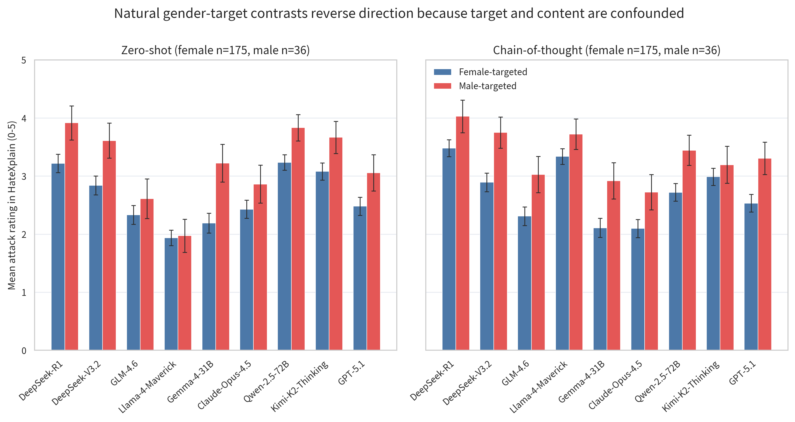
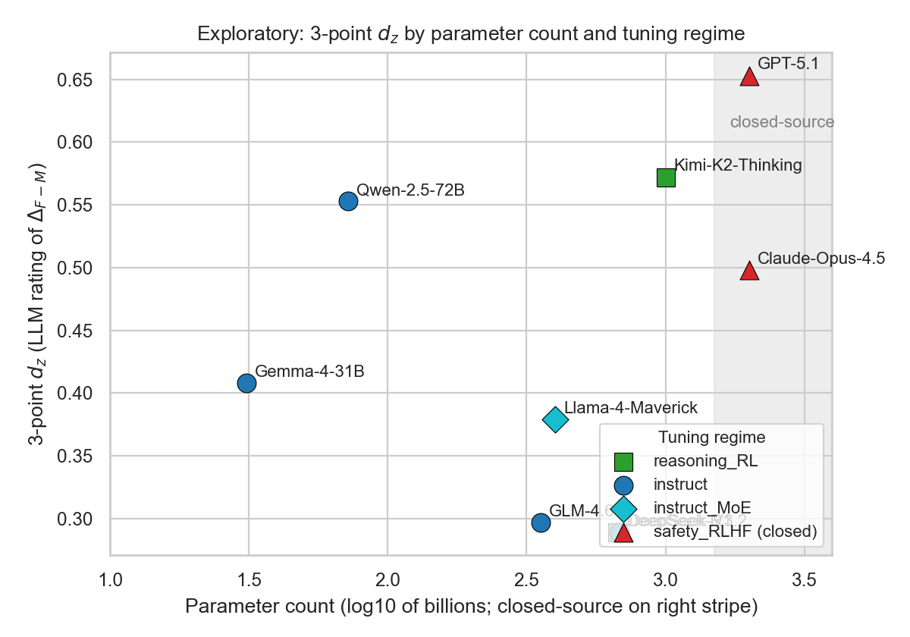

2026-05-21
Large language models (LLMs) are increasingly used for subjective social-judgement tasks, including offensive-speech evaluation, where ratings may depend on both hostile content and social-category cues. Gendered attack evaluation provides a direct test of this issue: the same hostile expression may be judged differently when it targets women rather than men, an effect documented both in early experimental work on hate-speech judgements that manipulated the target group (Cowan & Hodge, 1996) and in recent large-scale studies of human and LLM annotators showing that perceived severity varies with target attributes (Giorgi et al., 2025), but it remains unclear whether LLMs show the same target-gender sensitivity as human raters. We constructed 371 Chinese gender-reversal minimal pairs and collected ratings from nine contemporary LLMs and 779 valid Chinese participant sessions under three response formats: 3-point category, 7-point Likert, and 0–100 slider. The primary outcome was the female-minus-male perceived attack-rating gap, , summarized by Cohen’s across paired items. A preliminary natural-corpus check showed why the controlled design was necessary: female-targeted posts were more common, but male-targeted posts received higher raw LLM perceived attack ratings, reflecting confounding between target gender and content severity. In the minimal-pair data, all 36 rater-by-scale cells had positive , and both humans and LLMs located the largest gender-differential effects in sexualization and appearance. The two groups were nevertheless not interchangeable. On the 3-point scale, most LLMs showed smaller than the overall-human and female-participant references, although they exceeded the male-participant reference. Across scales, finer rating formats dampened human while amplifying most LLM values. LLMs and humans shared the direction and broad content structure of gender-differential attack ratings, but differed in effect magnitude, scale response, and fine-grained ordering.
中文题目：同一攻击文本指向女性或男性时——中文性别化攻击评分中的人机相似与分歧
中文摘要： 大语言模型正被广泛用于文本标注、内容审核、攻击性评价和计算社会科学编码等主观社会判断任务，而这类判断通常需要同时整合文本语义和社会类别线索。中文性别化攻击评价提供了一个关键情境：当同一攻击内容指向女性或男性目标时，人类和大语言模型是否呈现相同的目标性别敏感性仍不清楚。本研究构建371组性别反转最小配对句，并收集9个主流大语言模型和779个有效人类评分会话在3点类别量表、7点李克特量表和0–100滑动条上的评分。研究以女性目标版本减男性目标版本的感知攻击评分差异（）及其配对标准化效应量Cohen’s 为主要指标。初步自然语料分析表明，真实语料中的目标性别与内容严重程度、语境和其他社会类别线索相互混杂，难以直接估计目标性别本身的影响。在最小配对材料中，所有36个评分者-量表组合均呈现正向，且人类和大语言模型均在性化攻击和外貌攻击领域呈现最大的性别差异化评分效应。然而，这种一致性并不意味着两者可以互换：效应大小取决于所选人类参照组，评分量表会改变人机比较结果，细粒度项目层面的一致性仍然有限。本研究表明，性别化攻击评价中的人机一致性应被理解为受测量条件约束的相似与差异。
关键词： 大语言模型；性别化攻击；心理测量；最小配对设计；人机一致性；数据科学
Online hate and harassment undermine individual well-being, public discourse, and platform governance (Schoenebeck et al., 2023). In much of the English-language and Western-centered literature, online hate is studied across several protected or minoritized categories, including race, ethnicity, religion, nationality, sexuality, and gender (Windisch et al., 2022; Dutta et al., 2025; Fontanella et al., 2024). The Chinese context is organized differently. Although many forms of prejudice circulate in Chinese digital spaces, gender has become one of the most visible axes of online conflict in recent years: studies of Chinese social media document sexist and misogynistic language, the stigmatization of feminism, and platform dynamics that amplify gender antagonism on sites such as Weibo (Jiang et al., 2021; Jing-Schmidt & Peng, 2018; Liao, 2024). Chinese gender-related hate speech nevertheless remains less extensively studied than English-language online hate, especially in computational measurement work (Jiang et al., 2021). This makes Chinese gendered attacks an important case for examining how attack severity is perceived when hostile content is directed at female versus male targets.
LLMs are increasingly used to evaluate offensive and hateful speech. They now support text annotation, content-moderation workflows, toxicity scoring, and computational social-science coding tasks that previously depended primarily on human coders (He et al., 2024; Ziems et al., 2024). Their performance in hate-speech evaluation is useful but uneven. GPT-style models have shown only moderate zero- and one-shot performance in identifying sexist or racist text, with improvement under few-shot prompting (Chiu et al., 2022); newer models can make context-sensitive moderation judgements that align with humans in some conditions, while still showing demographic, lexical, and target-sensitive biases (Davidson, 2026; Giorgi et al., 2025). More broadly, prior work on subjective annotation cautions against treating model–human similarity as a single comparison against a neutral pooled-human reference. LLM outputs and learned datasets may align more closely with some annotator populations than others (Santy et al., 2023; H. Sun et al., 2025), annotator disagreement can encode meaningful subjective perception rather than noise (Davani et al., 2022; Larimore et al., 2021), and predicting individual-level text perceptions requires more than demographic prompting or a single aggregate baseline (Orlikowski et al., 2025). These concerns are central for gendered hate because the judgement depends on both hostile wording and the social meaning of the target identity. In Chinese, existing work has begun to build resources for sexism detection, but it remains unclear whether LLM attack ratings resemble Chinese human judgements when only target gender changes (Jiang et al., 2021).
Natural-language corpora cannot cleanly answer that question. In naturally occurring hate-speech and offensive-language datasets, target identity, lexical extremity, topic, context, and intersecting social-category cues are selected together rather than experimentally controlled (Mathew et al., 2021). A female-versus-male corpus comparison can describe which posts receive higher attack ratings, but not whether the difference is attributable to target gender rather than to the content that co-occurs with it.
The present study addresses this problem with a controlled Chinese minimal-pair design. Each item pairs two attack-laden sentences that hold the hostile content constant while reversing only the gender referent of the target. This design lets us estimate the paired female-minus-male perceived attack-rating gap, , as a target-gender manipulation effect rather than as a raw corpus contrast confounded by topic or severity. We then compare this gap between human raters and LLMs across response formats and analytic levels. The comparison is therefore not a general test of hate-speech detection accuracy, but a narrower measurement question: whether humans and LLMs change their perceived attack ratings in similar ways when the same hostile expression is directed at female versus male targets.
Prior work therefore motivates a conditional-alignment framing rather than a simple aggregate-human framing. The present study extends this framing to a controlled target-gender manipulation: the hostile content is held constant, and only the target gender changes. The question is not simply whether LLMs are “human-like,” but which parts of the model–human alignment profile remain stable across human reference group, response format, and analytic level.
This framing distinguishes two interpretations of apparent similarity. A weak aggregate-reference interpretation would treat a close comparison with the pooled human aggregate as evidence that the model approximates human judgement. A cue-based similarity interpretation would instead predict that LLMs preserve broad, high-salience patterns, such as the direction of the target-gender effect and the location of high-sensitivity attack domains, while diverging in effect magnitude, response-scale behaviour, and item-level ordering. The analyses below therefore move from direction, to magnitude, to domain profile, to scale response, and finally to item-level correspondence.
We ask five questions. RQ1 asks whether humans and LLMs both rate female-targeted versions as more attacking than matched male-targeted versions. RQ2 asks whether the magnitude of this gap is similar between LLMs and three human references: the pooled aggregate, female participants, and male participants. RQ3 asks whether the largest gender-differential effects occur in the same attack domains. RQ4 asks whether the observed gap changes across 3-point, 7-point, and slider scales in similar ways for humans and LLMs. RQ5, an exploratory extension, asks whether aggregate and domain-level similarity extend to item-level correspondence.
Existing hate-speech and offensive-language datasets, including widely used resources such as HateXplain, are valuable for estimating prevalence and benchmark performance, but they are weak designs for target-gender estimation. In such corpora, target identity is entangled with lexical extremity, topic, context, and intersecting social-category cues (Mathew et al., 2021). This matters for human–LLM comparison because both human annotators and LLMs can be sensitive to annotator attributes, target attributes, and social framing (Davani et al., 2022; Giorgi et al., 2025; Sap et al., 2019). Natural-corpus ratings can therefore show that a post is attacking; they cannot isolate whether its perceived attack severity is attributable to the gendered target or to the content selected with that target.
Controlled contrastive tests address this problem by measuring responses to targeted input changes rather than only aggregate benchmark performance (Ribeiro et al., 2020; Röttger et al., 2021). In the current task, each minimal pair holds attack content constant and changes only the gender referent. Under this design, the estimand is , the rating assigned to the female-targeted version minus the rating assigned to the matched male-targeted version of the same sentence, rather than the real-world frequency or objective severity of attacks against women or men. A larger means that the female-targeted version was rated as more attacking by a given rater group under a given response format.
Response format is part of the measurement design. Attack ratings are subjective judgments expressed through a response interface, and psychometric research shows that the number and format of response categories can affect reliability, validity evidence, discriminating power, and respondent behavior (Abulela & Khalaf, 2024; Preston & Colman, 2000). Very coarse scales can support applied classification but may compress meaningful differences; more graded scales can increase discrimination, although gains often level off around moderate category numbers (Lozano et al., 2008; Preston & Colman, 2000). Comparisons of Likert and visual analogue or slider scales likewise show that response format can change response distributions and resolution without being automatically superior across contexts (Haslbeck et al., 2025; Kloft et al., 2024; Vollbracht et al., 2026). The present study therefore treats 3-point, 7-point, and slider ratings as measurement conditions, not merely robustness checks.
Human–LLM alignment also depends on the human reference group. Benchmark-style evaluations often compare model outputs with a pooled human label, but subjective annotation research shows that disagreement can reflect meaningful differences in perception rather than error (Davani et al., 2022; Larimore et al., 2021). In hate-speech annotation, labels can vary with annotator and target characteristics, and existing datasets and models tend to align with specific demographic subgroups rather than equally representing all annotator populations (Santy et al., 2023); recent human–LLM comparisons further suggest that LLM rating patterns do not simply reproduce human socio-demographic variation (Giorgi et al., 2025; H. Sun et al., 2025). Related work on subjective text perception also shows that predicting individual-level judgments requires more than demographic prompting or a single aggregate baseline (Orlikowski et al., 2025). Accordingly, the present study compares LLMs with the pooled human aggregate, female participants, and male participants.
These design choices define human–LLM similarity as a multi-level comparison. Direction asks whether is positive for both groups. Magnitude asks whether the effect size is similar. Domain structure asks whether the largest gaps occur in the same attack domains. Scale response asks whether the gap changes similarly across response formats. Item-level correspondence asks whether aggregate similarity extends to the ordering of individual sentences. Throughout the paper, the term alignment refers to behavioural similarity between human and LLM ratings on the same items, not to RLHF or value alignment in the safety-tuning sense. Treating the levels separately avoids reducing human–LLM alignment to a single accuracy score or correlation.
A native Chinese-speaking research team constructed 371 minimal pairs of attack-laden sentences, yielding 742 gender-targeted sentence versions. The item pool was built from a three-level coding framework derived from prior research on gendered derogation, inductive review of hostile expressions in Chinese social-media contexts, and iterative team coding. The framework was designed to cover common forms of non-discriminatory interpersonal attack and comprised 10 first-level attack domains, 71 second-level categories, and more than 180 third-level categories. The 10 first-level domains were sexualization, appearance, gender role/expression, interpersonal relations, moral character, economic resources, social status, emotional stability, capability/competence, and intellectual rationality; only this first level is used in the main analyses.
Stimulus construction followed an integrative qualitative coding procedure. First, we reviewed prior literature on interpersonal derogation, gendered hostility, online sexism, and person evaluation to identify broad dimensions along which people are commonly attacked or negatively evaluated. Second, we refined this framework through qualitative coding of Chinese online hostile discourse. The coding integrated prior conceptual categories with inductive review of attack expressions observed on major Chinese social-media and forum platforms, including Weibo, Tieba, Xiaohongshu, Douban, and Hupu. The first level captured broad attack domains, the second level specified the attribute being attacked, and the third level described common rhetorical or expressive strategies used to realize that attack.
Sentence templates were then generated under this coding framework. Candidate expressions were adapted from naturally occurring online attack language and supplemented with AI-assisted drafting. AI was used only as a drafting aid; all candidate items were manually reviewed, revised, or discarded by the research team. The initial pool contained approximately 400 candidate templates. Items were removed or rewritten if they sounded unnatural, overly rigid, relied on attack meanings that were specific to only one gender target, depended on platform-specific context, or could not be reversed without changing the attack content or perceived pragmatic force. The final stimulus set contained 371 templates.
All items were reviewed by three native Chinese-speaking coders with psychology training for naturalness, attack presence, domain fit, and minimal-pair equivalence. Disagreements were resolved through discussion, and items that could not be revised to satisfy these criteria were excluded.
Within each pair, the two versions are identical except for a gender-referent substitution (e.g., she he; woman man; female-coded vs. male-coded names; female-coded vs. male-coded relational kin terms). The minimal-pair design is the design ingredient that lets us causally attribute any residual rating gap to the gender manipulation rather than to selection on content extremity, a confound that is endemic to natural-language gender comparisons (Section 4.1).
The study used three response formats to operationalize rating granularity. The 3-point category scale was and represents a coarse, annotation-like format resembling applied content moderation decisions. The 7-point Likert-type scale ranged from 0 to 6, where 0 indicates no attack and larger values indicate higher perceived attack severity; it represents a conventional psychometric compromise that permits graded perceived severity while remaining categorical. The 0–100 slider was a continuous numeric response and represents a high-granularity format for expressing perceived intensity. All three formats were used for both human and LLM ratings.
Nine contemporary LLMs were queried in November 2025 via their respective APIs: Anthropic Claude-Opus-4.5, DeepSeek-R1, DeepSeek-V3.2, Google Gemma-4-31B, Meta Llama-4-Maverick, Moonshot Kimi-K2-Thinking, OpenAI GPT-5.1, Qwen-2.5-72B-Instruct, and Z-AI GLM-4.6. Each model rated both the female-targeted and the male-targeted version of every minimal pair under all three rating formats.
The main analyses use zero-shot responses; chain-of-thought variants were collected for the calibration check in Section 4.1 but are not the focus of the rest of the paper.
[Placeholder for Appendix zero-shot vs. chain-of-thought comparison.] The appendix will report the Study 1 calibration comparison between zero-shot and chain-of-thought prompting. This comparison should show that chain-of-thought prompting did not uniformly improve the natural-corpus gender-target contrast, and that the main minimal-pair analyses therefore use zero-shot ratings as the primary specification.
We recruited Chinese participants online through social-media recruitment. After quality-control screening, the analytic sample contained 779 valid rating sessions from 712 unique participants. Participants were randomly assigned to one of the three rating formats and rated a pseudo-random subset of approximately 75 sentence versions in their assigned scale, with item presentation order randomized and attention checks interleaved. The sampling procedure avoided presenting both gender versions of the same template to the same participant. Thus, unlike the LLM design in which each model rated both versions of every pair, the human study estimated the female- and male-targeted item means across participants and then paired those item means at the template level.
The session-level sample was nearly gender-balanced across scales (Table 1) and concentrated among young Chinese internet users (Table 2). Item-level mean ratings were computed within each (rater group, scale) cell separately, where “rater group” refers to one of three human strata (overall, female participants, male participants) plus the nine LLMs. The participant pool is not nationally representative (see Limitations). All experiments received host-institution ethics approval.
| Scale | Female participants | Male participants | Total | Share |
|---|---|---|---|---|
| 3-point | 134 | 134 | 268 | 34.4% |
| 7-point Likert | 128 | 116 | 244 | 31.3% |
| 0–100 slider | 130 | 137 | 267 | 34.3% |
| Total | 392 | 387 | 779 | 100% |
| Share | 50.3% | 49.7% | 100% |
| Variable / value | 3-point () | 7-point () | Slider () | Full sample () |
|---|---|---|---|---|
| Age band | ||||
| –24 | 176 (65.7%) | 162 (66.4%) | 200 (74.9%) | 538 (69.1%) |
| –34 | 84 (31.3%) | 73 (29.9%) | 53 (19.9%) | 210 (27.0%) |
| –50 | 6 (2.2%) | 6 (2.5%) | 12 (4.5%) | 24 (3.1%) |
| Other (12–18 / 50+) | 2 (0.7%) | 3 (1.2%) | 2 (0.7%) | 7 (0.9%) |
| Education | ||||
| Bachelor’s degree | 205 (76.5%) | 183 (75.0%) | 210 (78.7%) | 598 (76.8%) |
| Associate degree | 30 (11.2%) | 35 (14.3%) | 28 (10.5%) | 93 (11.9%) |
| Master’s degree | 23 (8.6%) | 18 (7.4%) | 19 (7.1%) | 60 (7.7%) |
| Doctoral degree or above | 2 (0.7%) | 2 (0.8%) | 1 (0.4%) | 5 (0.6%) |
| High school or below | 6 (2.2%) | 5 (2.0%) | 8 (3.0%) | 19 (2.4%) |
| Prefer not to answer | 2 (0.7%) | 1 (0.4%) | 1 (0.4%) | 4 (0.5%) |
| Monthly income | ||||
| No fixed income | 48 (17.9%) | 57 (23.4%) | 62 (23.2%) | 167 (21.4%) |
| RMB or below | 47 (17.5%) | 46 (18.9%) | 66 (24.7%) | 159 (20.4%) |
| –5000 RMB | 39 (14.6%) | 37 (15.2%) | 50 (18.7%) | 126 (16.2%) |
| –8000 RMB | 81 (30.2%) | 55 (22.5%) | 54 (20.2%) | 190 (24.4%) |
| –12000 RMB | 32 (11.9%) | 25 (10.2%) | 18 (6.7%) | 75 (9.6%) |
| Above 12000 RMB | 12 (4.5%) | 13 (5.3%) | 12 (4.5%) | 37 (4.7%) |
| Prefer not to answer | 9 (3.4%) | 11 (4.5%) | 5 (1.9%) | 25 (3.2%) |
| Currently enrolled student | ||||
| Yes | 16 (6.0%) | 19 (7.8%) | 9 (3.4%) | 44 (5.6%) |
| No | 252 (94.0%) | 225 (92.2%) | 258 (96.6%) | 735 (94.4%) |
The primary item-level outcome is the female-minus-male perceived attack-rating gap, where and are the mean perceived attack ratings of the female-targeted and male-targeted versions of item within a given rater group and scale. The summary effect size for a (rater group , scale ) cell is Cohen’s , computed across the paired items as a paired standardized effect size (Cohen, 1988). The 371 paired items, not individual rater responses, are the unit of analysis for . We cross 12 rater groups (9 LLMs 3 human strata) with 3 scales for a total of 36 (rater scale) cells. Where descriptive comparisons are made across scales, item means and gaps are normalized by scale-maximum so that the three scales are placed on a common 0–1 axis; itself is scale-free.
The Results describe where human and LLM perceived attack ratings are similar and where they differ. We first show why natural-corpus gender contrasts cannot identify the target-gender effect that the paper seeks to measure. We then move through progressively stricter comparisons: shared direction, matched magnitude, shared content structure, stability across response scales, and level-dependent similarity. Each layer adds one necessary condition to the preceding result.
Before testing alignment, we first ask whether raw natural-corpus gender contrasts can answer the target-gender question at all. They cannot. Figure 1 isolates posts whose target can be coded as female or male in the English HateXplain subset. Female-targeted posts were more common () than male-targeted posts (), but the model panel assigned higher mean attack ratings to male-targeted posts in every model cell under both zero-shot and chain-of-thought prompting. Averaged across the nine models, the male-targeted mean exceeded the female-targeted mean by 0.557 points in zero-shot and 0.628 points in chain-of-thought on the 0–5 HateXplain rating scale.

The reversal clarifies why the natural-corpus contrast is not an estimate of a target-gender effect. This first analysis uses an existing natural-language hate-speech corpus to diagnose the confounding problem that motivates the study design. Prevalence and extremity diverge: female-targeted attacks are more common in this subset, whereas the smaller male-targeted subset receives more extreme LLM ratings. A second confound is also visible in the corpus. Male-targeted hate often co-occurs with racialized language and other group cues, making it impossible to determine whether a raw rating difference reflects the offensive content of the sentence, the gender of the target, or another social category invoked in the same post.
This result rules out a simple natural-corpus interpretation. If the goal is to estimate whether the gender referent itself changes perceived attack ratings, raw male-target versus female-target comparisons are not informative. From the next analysis onward, the paper therefore leaves the existing natural corpus and uses the self-constructed 371 Chinese minimal pairs. In these materials, each female-targeted sentence is matched to a male-targeted sentence with the same attack content. By reversing only the gender referent, the design holds the insulting content constant and estimates whether the target’s gender changes perceived attack severity. The estimand is the paired female-minus-male gap, .
Directional agreement is the minimal but necessary form of alignment: before asking whether models match humans in magnitude or fine-grained structure, they must at least place the average gender effect on the same side of zero. They do. Every one of the 36 rater-by-scale cells had positive mean (Figure 2). Among human raters, the female-targeted version received a higher aggregated rating for 58.2%–74.7% of items, depending on participant group and scale. Among LLMs, 3-point-scale ratings frequently produced identical values for the female- and male-targeted versions of the same item pair; the mean gap was nevertheless positive in every model cell, and all 27 LLM cells reached BH-FDR adjusted for .
This is the most basic and robust form of alignment in the paper. Humans and LLMs both rate female-targeted versions of the same attack sentence as more attacking on average. The result is also limited: it establishes direction only. It does not show that humans and LLMs agree on the size of the perceived-rating gap, the domains in which it is largest, the way it changes with scale, or the specific items that drive it.
Shared direction does not imply shared magnitude. The next test asks whether the size of the female-minus-male perceived-rating gap is close to a specified human reference, and that question has no answer until the reference group is specified. Among our three formats, we anchor this section on the 3-point scale because, among the three formats studied here, it is the most categorical and closest in label-set granularity to the small label sets commonly used in hate-speech annotation, such as the three-label schemes of HateXplain (Mathew et al., 2021) and SWSR (Jiang et al., 2021). Throughout, “larger gender-differential effect” refers to a larger positive in perceived attack ratings and is not a normative claim. The three human reference values on the 3-point scale are for male participants, for the overall human aggregate, and for female participants. The nine LLMs span to on the same scale (Table 3); Figure 3 shows the corresponding model-minus-human gaps.

| Rater | Mean (M) | Mean (F) | ||
|---|---|---|---|---|
| Male participants | 0.573 | 0.602 | 0.030 | 0.219 |
| Overall humans | 0.562 | 0.622 | 0.060 | 0.621 |
| Female participants | 0.552 | 0.642 | 0.090 | 0.655 |
| DeepSeek-R1 | 0.892 | 0.945 | 0.053 | 0.289 |
| DeepSeek-V3.2 | 0.807 | 0.869 | 0.062 | 0.289 |
| GLM-4.6 | 0.846 | 0.907 | 0.061 | 0.297 |
| Llama-4-Maverick | 0.784 | 0.854 | 0.070 | 0.379 |
| Gemma-4-31B | 0.902 | 0.973 | 0.071 | 0.408 |
| Claude-Opus-4.5 | 0.834 | 0.934 | 0.100 | 0.498 |
| Qwen-2.5-72B | 0.796 | 0.914 | 0.117 | 0.553 |
| Kimi-K2-Thinking | 0.709 | 0.853 | 0.144 | 0.572 |
| GPT-5.1 | 0.737 | 0.887 | 0.150 | 0.653 |
The comparison changes with the human reference group. Against male participants (), all nine LLM point estimates are larger, and six bootstrap intervals are entirely above zero. Against female participants (), no LLM point estimate exceeds the female-participant reference; six intervals are entirely below zero, while Qwen-2.5-72B, Kimi-K2-Thinking, and GPT-5.1 overlap zero. Against the overall human aggregate (), five LLMs are clearly lower (DeepSeek-R1, DeepSeek-V3.2, GLM-4.6, Llama-4-Maverick, and Gemma-4-31B), while Claude-Opus-4.5, Qwen-2.5-72B, Kimi-K2-Thinking, and GPT-5.1 overlap the aggregate reference.
The magnitude comparison therefore has no reference-free answer. The same nine models were larger than male participants, no larger than female participants, and mixed against the pooled human estimate. A pooled human baseline is a weighted mixture of subgroups that differ in the outcome being evaluated.
Magnitude comparisons still collapse over what the attacks are about, so the next layer describes where the gender-differential perceived-rating effect is largest. Figure 4 shows first-level domain values for the three human strata and for the LLM median, with domains kept in a fixed order. Sexualization and appearance are the shared high-sensitivity domains in both human and LLM ratings.


On the human side, sexualization and appearance are the two highest- domains at every scale for the overall human aggregate: sexualization , , and across the three scales, and appearance , , and . Female participants show the same hot zone. Male participants have a smaller overall effect, but their largest positive domain effects still fall in sexualization and appearance.
The LLMs share the same broad location but not always the same internal ordering. The two hot-zone domains are consistently prominent in the LLM median. On the 3-point scale, some models flatten or invert the sexualization-above-appearance ordering; for example, DeepSeek-V3.2 has sexualization and appearance . On the 7-point and slider scales, most models show sexualization above appearance. Domain-level similarity is clearest at the location of the two high-sensitivity domains.
| Sexualization | Appearance | |||||
|---|---|---|---|---|---|---|
| 2-4 (lr)5-7 Rater | 3pt | 7pt | Slider | 3pt | 7pt | Slider |
| Overall humans | 1.47 | 1.42 | 1.18 | 0.76 | 0.80 | 0.61 |
| Female participants | 1.33 | 1.35 | 1.09 | 0.64 | 0.81 | 0.69 |
| Male participants | 1.03 | 0.75 | 0.56 | 0.42 | 0.16 | 0.23 |
| DeepSeek-V3.2 | 0.06 | 0.69 | 1.13 | 0.37 | 0.70 | 0.57 |
| Claude-Opus-4.5 | 0.46 | 1.06 | 0.88 | 0.56 | 1.01 | 1.49 |
| GPT-5.1 | 0.65 | 1.06 | 0.84 | 0.68 | 0.87 | 1.03 |
| Gemma-4-31B | 0.51 | 1.06 | 0.86 | 0.56 | 1.19 | 1.15 |
Even if direction and broad domain structure align, the magnitude comparison changes with response format. Figure 6 shows the cross-scale trajectory of . Human effects stay flat or decline as the scale becomes finer: overall humans move from to to , male participants from to to , and female participants from to to . Most LLMs move in the opposite direction. Six of nine models show monotonic or near-monotonic increases, with Gemma-4-31B rising from to to .

This scale dependence changes the descriptive comparison. On the 3-point scale, five of nine LLMs sit below the overall-human reference. On the slider, five of nine sit at or above it. Coarse annotation categories place more models below the overall-human reference than the slider does. This is a measurement-level result: the scale changes the observed pattern, and therefore the apparent alignment.
| Rater | 3pt | 7pt | Slider | Trend across scales |
|---|---|---|---|---|
| Overall humans | 0.621 | 0.588 | 0.512 | decrease (monotonic) |
| Male participants | 0.219 | 0.198 | 0.167 | decrease (monotonic) |
| Female participants | 0.655 | 0.704 | 0.590 | 7pt peak, slider decline |
| Claude-Opus-4.5 | 0.498 | 0.693 | 0.748 | increase (monotonic) |
| DeepSeek-R1 | 0.289 | 0.422 | 0.510 | increase (monotonic) |
| DeepSeek-V3.2 | 0.289 | 0.371 | 0.460 | increase (monotonic) |
| GLM-4.6 | 0.297 | 0.353 | 0.423 | increase (monotonic) |
| Gemma-4-31B | 0.408 | 0.773 | 1.016 | increase (steep) |
| GPT-5.1 | 0.653 | 0.840 | 0.714 | 7pt peak |
| Kimi-K2-Thinking | 0.572 | 0.505 | 0.593 | approximately flat |
| Llama-4-Maverick | 0.379 | 0.477 | 0.409 | 7pt peak |
| Qwen-2.5-72B | 0.553 | 0.578 | 0.686 | increase |
A human-side repeated-measures ANOVA clarifies the human component of this pattern. In a stimulus-as-unit analysis of normalized , participant gender had a substantially larger effect, , , , than scale, , Greenhouse–Geisser corrected , . The participant-gender by scale interaction was not significant, , . Female participants exceeded male participants within every scale after BH-FDR correction. Participant gender is the larger human-side determinant of , and scale also changes the observed effect. The cross-rater human–LLM scale contrast remains descriptive because LLMs are deterministic raters rather than participant-level random effects.
Aggregate similarity can hide weaker fine-grained correspondence, so the final layer asks which model is closest to a human reference under a specified metric. The indicators in this section are not interchangeable rankings; they correspond to distinct alignment claims. At the aggregate level, similarity means a small absolute gap between a model’s overall and a human reference group’s overall , asking whether the model matches the average effect size. At the domain level, similarity means a high Spearman correlation between the model and human vectors over the 10 first-level attack domains, asking whether the model matches the broad content organization of the perceived-rating effect. Item-level ICC(2,1) is reported in Table 6 as a finer-grained check over the 371 paired items.

The levels produce different closest-model rankings (Figure 7; Table 6). At the aggregate level, several models nearly match a chosen human reference: the smallest absolute gaps are 0.032, 0.010, and 0.002 against overall humans across the three scales, and 0.002–0.012 against female participants. At the domain level, the best 10-domain Spearman correlations range from 0.56 to 0.85 across the nine human-reference-by-scale cells. Because the domain count is small (), Spearman correlations have a wide chance band: a two-sided permutation null with two random rankings of 10 items has an approximate interval of , so must exceed about to be distinguishable from random ranking. Per-cell two-sided permutation values are reported in Table 6 and computed using random permutations. Seven of the nine best-model cells reach ; the two cells that do not are both anchored on the female-participant reference, where the best-model values are 0.56 (3-point, ) and 0.64 (7-point, ). The female-participant slider cell does exceed chance (, ). The domain-level result echoes the shared sexualization and appearance pattern in Section 4.4 for most reference-by-scale cells, but it should not be read as universal: the female-anchored coarse-scale cells are not separable from chance with the available domain count.
At the item level, the best ICC(2,1) in each cell remains low, ranging from 0.089 to 0.222. Against overall humans, the best item-level ICC rises from 0.089 on the 3-point scale to 0.158 on the 7-point scale and 0.222 on the slider, with Claude-Opus-4.5 the closest model on the two finer scales. The item-level closest model also varies across human-reference-by-scale cells.
| Human reference | Scale | Closest aggregate | Closest 10-domain profile (, ) | Closest item profile |
|---|---|---|---|---|
| Overall humans | 3-point | GPT-5.1 (.032) | Gemma-4-31B (.66, ) | Llama-4-Maverick (.089) |
| Overall humans | 7-point | Qwen-2.5-72B (.010) | Claude-Opus-4.5 (.66, ) | Claude-Opus-4.5 (.158) |
| Overall humans | Slider | DeepSeek-R1 (.002) | Kimi-K2-Thinking (.76, ) | Claude-Opus-4.5 (.222) |
| Female participants | 3-point | GPT-5.1 (.002) | Gemma-4-31B (.56, ) | DeepSeek-R1 (.100) |
| Female participants | 7-point | Claude-Opus-4.5 (.012) | Gemma-4-31B (.64, ) | Claude-Opus-4.5 (.116) |
| Female participants | Slider | Kimi-K2-Thinking (.003) | DeepSeek-V3.2 (.85, ) | Qwen-2.5-72B (.112) |
| Male participants | 3-point | DeepSeek-V3.2 (.070) | Qwen-2.5-72B (.72, ) | Llama-4-Maverick (.096) |
| Male participants | 7-point | GLM-4.6 (.155) | DeepSeek-V3.2 (.81, ) | GLM-4.6 (.155) |
| Male participants | Slider | Llama-4-Maverick (.242) | Kimi-K2-Thinking (.73, ) | DeepSeek-R1 (.174) |
Which model is closest depends on the level of analysis. GPT-5.1 and Qwen-2.5-72B can be closest in aggregate magnitude, Gemma-4-31B or Kimi-K2-Thinking can be closest in the 10-domain profile, and Claude-Opus-4.5 is often closest at the item level for overall humans on finer scales. These three rankings describe three different alignment claims and do not collapse into one global ordering.
The layers above converge on a conditional alignment profile rather than a single alignment score (Table 7). Direction-level agreement is strong. Magnitude agreement depends on the human reference group. Domain-level agreement is present for sexualization and appearance, but not perfectly for their ordering. Scale changes the model-human comparison. Item-level agreement remains weak.
| Question | Answer | Main evidence | Result summary |
|---|---|---|---|
| Do humans and LLMs agree on direction? | Yes | 36/36 rater-by-scale cells have positive | Same direction |
| Do they agree in magnitude? | It depends on the human reference | LLMs are above male participants, at or below female participants, and mixed against overall humans | Reference-dependent magnitude |
| Do they locate the effect in the same domains? | Broadly yes | Sexualization and appearance are the shared high-sensitivity domains | Shared domain hot zone |
| Does scale preserve the human–LLM comparison? | No | Human dampens or peaks; most LLM values increase | Opposite scale-response pattern |
| Does aggregate agreement imply item agreement? | No | Best ICC(2,1) is 0.222; closest model changes across cells | Weak item-level correspondence |
Human–LLM alignment in gender-differential attack ratings varies with the human reference group, the rating scale, and the level of analysis, and cannot be summarized by a single agreement coefficient.
These findings rule out a view of LLM gendered-attack ratings as a smoothed group-average human signal. The closest human reference varied across response formats: it lay in the segment between the male-participant and pooled-human references on the 3-point scale, and shifted toward and above the female-participant reference on the slider. Item-level values remained in the – range even when aggregate values nearly coincided. Both observations are inconsistent with an aggregate-mean account of LLM social judgement, under which an LLM would behave like a single fixed human group, and consistent with a coarse-classifier account, under which LLM social judgements are dominated by category-level decisions about whether content is offensive at all. The shared direction-of-effect (Section 4.2) and partially shared domain profiles (Section 4.4) constrain this conclusion: LLMs encoded the average gender-differential effect and located it in the same content regions as humans whenever the domain-profile alignment exceeded chance (a permutation null for Spearman over 10 domains has a two-sided interval of approximately , so domain similarities below that band cannot be distinguished from random ranking). The coarse-classifier reading therefore concerns the granularity of LLM social judgement at the item level, with content sensitivity at the aggregate and domain level preserved.
Cross-model variability is large and is not adjudicated by the two accounts above. Within the present panel, on the 3-point scale ranges from to , and the slope from 3-point to slider ranges from (Claude-Opus-4.5, GPT-5.1) to (Gemma-4-31B). A sensitivity-calibrated sub-account would predict that safety- or instruction-tuning makes some models systematically more responsive on protected-attribute content as the scale gives them more numerical room to express that response, and Figure 8 reports an exploratory descriptive view of 3-point against approximate parameter count and tuning regime. The figure is explicitly non-inferential: with production LLMs and confounding between parameter count, tuning regime, and pretraining corpus, no inferential test is justified. Other plausible moderators of LLM-to-LLM variability include the tuning regime (instruction-tuning vs. safety-oriented RLHF vs. reasoning-oriented RL), system-prompt formulation at inference, and pretraining-corpus composition; separating their contributions requires a controlled comparison that varies each moderator while holding the others fixed.

Reporting a single agreement metric against a pooled human reference under one response format cannot distinguish an aggregate-mean LLM from a coarse-classifier LLM, because the two accounts diverge only across human reference groups, response formats, and analytic levels. The same panel of nine LLMs that looks above the pooled-human on the slider sits below it on the 3-point scale (Section 4.5), and the same panel that nearly matches humans in aggregate shows item-level ICCs of at most (Section 4.6); either of these comparisons in isolation supports an aggregate-mean reading that the other refutes. A pooled-human gold label also hides subgroup structure, since female and male participants produced systematically different values, so an aggregate similarity claim is not interpretable without naming the human reference group. Domain-level Spearman correlations require an explicit permutation-null baseline because with only 10 attack domains random ranking already covers a wide band, so a moderate Spearman value is not automatically informative. Controlled minimal-pair stimuli are needed to isolate target gender from content extremity, which is confounded with target identity in natural corpora (Section 4.1). For LLM-rater validation studies, the alignment construct must be reported as a structured profile across direction, aggregate magnitude, domain profile, and item level, and across at least two measurement moderators (human reference group and response format), rather than as a single global agreement number.
For Chinese social-computing pipelines that use LLM ratings of gendered attack content, three concrete uses are constrained by these findings. First, an LLM rating against a single pooled-human label cannot be interpreted as the LLM’s match to female perceivers’ judgements even when the aggregate values are close, because pooled-human aggregates are mixtures of subgroups with materially different . Second, an aggregate-level agreement statistic cannot certify item-level interchangeability for moderation pipelines that act on individual posts, since aggregate similarity in this study coexists with at the item level, meaning that two LLMs that look indistinguishable in mean effect size can still rank individual sentences very differently. Third, a model-versus-human comparison conducted on a coarse 3-point scale does not transfer to deployment settings that elicit finer-grained ratings (such as continuous toxicity scores), because the LLM-to-human gap is not monotone in scale granularity: human values flatten or decline as the scale becomes finer, while most LLM values increase. Pipelines that depend on any of these three substitutions need an alignment profile specific to their deployed reference group, scale, and analytic level rather than a transferred single-number agreement claim.
The methodological recommendation that follows is narrower than “report multiple metrics.” Evaluations of LLM social judgements on subjective content should specify, at minimum, (a) the human reference group, naming subgroups when subgroup gaps are larger than the scale main effect; (b) the response scale, treated as a measurement condition rather than a robustness check; and (c) the analytic level, separating aggregate, domain-profile, and item-level correspondence. Without these three pieces, an alignment claim is underspecified and can support contradictory readings of the same underlying data.
The minimal-pair items are Chinese; whether the same pattern of measurement-conditional alignment holds in a parallel English corpus, where the gender-marking morphology and pronoun system differ, is an open question that we are pursuing in follow-up work. The participant pool is a Chinese online sample with a young, urban skew and is not nationally representative; the human reference values reported here should be read as the values of this pool rather than as universal human baselines. The LLM panel is a snapshot of November 2025 production models; reproducibility under later versions and under fine-tuned annotation prompts will require re-evaluation. We used zero-shot prompting as the main setting; whether chain-of-thought, system-prompt scaffolding, or task-specific fine-tuning attenuate the granularity inversion is open. The minimal-pair design isolates the gender referent but may not capture all pragmatic and contextual features of real hate speech, including multimodal cues, reply context, and audience-targeted dog-whistle language. Participant gender is treated as binary in the present analysis because the data permit only that contrast at sample sizes large enough for stable per-cell ; future work with larger non-binary samples should examine more nuanced identity variables. Finally, the three rating formats may differ not only in granularity but also in cognitive demand, time on task, and anchor availability; disentangling those mechanisms will require dedicated psychophysical follow-up.
When attack content is held fixed, humans and LLMs agree on the direction of the gender-differential perceived-rating effect: female-targeted versions are rated as more attacking on average. They also share a broad content structure, with the largest effects concentrated in sexualization and appearance. The agreement stops short of full interchangeability. Magnitude depends on the human reference group, scale changes the model-human comparison, and item-level ICC remains low even when aggregate is close. The practical conclusion is that LLM alignment on gender-differential attack ratings should be reported as a profile across reference groups, response formats, and analytic levels. Evaluations should specify which human reference, which response scale, and which analytic level the alignment claim applies to before asking whether LLM ratings are more or less biased than human ratings.
| Rater | Mean (M) | Mean (F) | ||
|---|---|---|---|---|
| Male participants | 0.631 | 0.648 | 0.017 | 0.167 |
| Overall humans | 0.626 | 0.662 | 0.036 | 0.512 |
| Female participants | 0.621 | 0.677 | 0.056 | 0.590 |
| Llama-4-Maverick | 0.704 | 0.733 | 0.029 | 0.409 |
| GLM-4.6 | 0.785 | 0.817 | 0.031 | 0.423 |
| DeepSeek-V3.2 | 0.748 | 0.787 | 0.039 | 0.460 |
| DeepSeek-R1 | 0.770 | 0.814 | 0.043 | 0.510 |
| Kimi-K2-Thinking | 0.700 | 0.764 | 0.064 | 0.593 |
| Qwen-2.5-72B | 0.681 | 0.741 | 0.060 | 0.686 |
| GPT-5.1 | 0.728 | 0.784 | 0.056 | 0.714 |
| Claude-Opus-4.5 | 0.719 | 0.754 | 0.036 | 0.748 |
| Gemma-4-31B | 0.727 | 0.794 | 0.067 | 1.016 |
All artifacts referenced here, including the revised reference-group bootstrap plot, domain forest plot, scale-response trajectory, item-level dissociation figure, analysis tables, and source code, are available in the project repository.
30
Abulela, M. A. A., and Khalaf, M. A. (2024). Does the number of response categories impact validity evidence in self-report measures? A scoping review. SAGE Open, 14(1). https://doi.org/10.1177/21582440241230363
Chiu, K.-L., Collins, A., and Alexander, R. (2022). Detecting hate speech with GPT-3. arXiv preprint arXiv:2103.12407. https://doi.org/10.48550/arXiv.2103.12407
Cohen, J. (1988). Statistical power analysis for the behavioral sciences (2nd ed.). Lawrence Erlbaum Associates.
Cowan, G., and Hodge, C. (1996). Judgments of hate speech: The effects of target group, publicness, and behavioral responses of the target. Journal of Applied Social Psychology, 26(4), 355–374. https://doi.org/10.1111/j.1559-1816.1996.tb01853.x
Davidson, T. (2026). Multimodal large language models can make context-sensitive hate speech evaluations aligned with human judgement. Nature Human Behaviour, 10, 514–530. https://doi.org/10.1038/s41562-025-02360-w
Davani, A. M., Díaz, M., and Prabhakaran, V. (2022). Dealing with disagreements: Looking beyond the majority vote in subjective annotations. Transactions of the Association for Computational Linguistics, 10, 92–110. https://doi.org/10.1162/tacl_a_00449
Dutta, A., Banducci, S., and Camargo, C. Q. (2025). Divided by discipline? A systematic literature review on the quantification of online sexism and misogyny using a semi-automated approach. Scientometrics, 130, 4915–4971. https://doi.org/10.1007/s11192-025-05410-2
Fontanella, L., Chulvi, B., Ignazzi, E., Sarra, A., and Tontodimamma, A. (2024). How do we study misogyny in the digital age? A systematic literature review using a computational linguistic approach. Humanities and Social Sciences Communications, 11, Article 478. https://doi.org/10.1057/s41599-024-02978-7
Giorgi, T., Cima, L., Fagni, T., Avvenuti, M., and Cresci, S. (2025). Human and LLM biases in hate speech annotations: A socio-demographic analysis of annotators and targets. Proceedings of the International AAAI Conference on Web and Social Media, 19(1), 653–670. https://doi.org/10.1609/icwsm.v19i1.35837
Haslbeck, J. M. B., Martínez, A. J., Roefs, A. J., Fried, E. I., Lemmens, L. H. J. M., Groot, E., and Edelsbrunner, P. A. (2025). Comparing Likert and visual analogue scales in ecological momentary assessment. Behavior Research Methods, 57, Article 217. https://doi.org/10.3758/s13428-025-02706-2
He, X., Lin, Z., Gong, Y., Jin, A.-L., Zhang, H., Lin, C., Jiao, J., Yiu, S. M., Duan, N., and Chen, W. (2024). AnnoLLM: Making large language models to be better crowdsourced annotators. In Proceedings of the 2024 Conference of the North American Chapter of the Association for Computational Linguistics: Human Language Technologies (Volume 6: Industry Track) (pp. 165–190). Association for Computational Linguistics. https://doi.org/10.18653/v1/2024.naacl-industry.15
Jiang, A., Yang, X., Liu, Y., and Zubiaga, A. (2021). SWSR: A Chinese dataset and lexicon for online sexism detection. Online Social Networks and Media, 27, Article 100182. https://doi.org/10.1016/j.osnem.2021.100182
Jing-Schmidt, Z., and Peng, X. (2018). The sluttified sex: Verbal misogyny reflects and reinforces gender order in wireless China. Language in Society, 47(3), 385–408. https://doi.org/10.1017/S0047404518000386
Kloft, M., Snijder, J.-P., and Heck, D. W. (2024). Measuring the variability of personality traits with interval responses: Psychometric properties of the dual-range slider response format. Behavior Research Methods, 56, 3469–3486. https://doi.org/10.3758/s13428-024-02394-4
Larimore, S., Kennedy, I., Haskett, B., and Arseniev-Koehler, A. (2021). Reconsidering annotator disagreement about racist language: Noise or signal? In Proceedings of the Ninth International Workshop on Natural Language Processing for Social Media, pp. 81–90. Association for Computational Linguistics. https://doi.org/10.18653/v1/2021.socialnlp-1.7
Liao, S. (2024). The platformization of misogyny: Popular media, gender politics, and misogyny in China’s state-market nexus. Media, Culture & Society, 46(1), 191–207. https://doi.org/10.1177/01634437221146905
Lozano, L. M., García-Cueto, E., and Muñiz, J. (2008). Effect of the number of response categories on the reliability and validity of rating scales. Methodology: European Journal of Research Methods for the Behavioral and Social Sciences, 4(2), 73–79. https://doi.org/10.1027/1614-2241.4.2.73
Mathew, B., Saha, P., Yimam, S. M., Biemann, C., Goyal, P., and Mukherjee, A. (2021). HateXplain: A benchmark dataset for explainable hate speech detection. Proceedings of the AAAI Conference on Artificial Intelligence, 35(17), 14867–14875. https://doi.org/10.1609/aaai.v35i17.17745
Orlikowski, M., Pei, J., Röttger, P., Cimiano, P., Jurgens, D., and Hovy, D. (2025). Beyond demographics: Fine-tuning large language models to predict individuals’ subjective text perceptions. In Proceedings of the 63rd Annual Meeting of the Association for Computational Linguistics (Volume 1: Long Papers) (pp. 2092–2111). Association for Computational Linguistics. https://doi.org/10.18653/v1/2025.acl-long.104
Preston, C. C., and Colman, A. M. (2000). Optimal number of response categories in rating scales: Reliability, validity, discriminating power, and respondent preferences. Acta Psychologica, 104(1), 1–15. https://doi.org/10.1016/S0001-6918(99)00050-5
Ribeiro, M. T., Wu, T., Guestrin, C., and Singh, S. (2020). Beyond accuracy: Behavioral testing of NLP models with CheckList. In Proceedings of the 58th Annual Meeting of the Association for Computational Linguistics (pp. 4902–4912). Association for Computational Linguistics. https://doi.org/10.18653/v1/2020.acl-main.442
Röttger, P., Vidgen, B., Nguyen, D., Waseem, Z., Margetts, H., and Pierrehumbert, J. (2021). HateCheck: Functional tests for hate speech detection models. In Proceedings of the 59th Annual Meeting of the Association for Computational Linguistics and the 11th International Joint Conference on Natural Language Processing (Volume 1: Long Papers) (pp. 41–58). Association for Computational Linguistics. https://doi.org/10.18653/v1/2021.acl-long.4
Santy, S., Liang, J.T., Le Bras, R., Reinecke, K., and Sap, M. (2023). NLPositionality: Characterizing design biases of datasets and models. In Proceedings of the 61st Annual Meeting of the Association for Computational Linguistics (Volume 1: Long Papers), pp. 9080–9102. Association for Computational Linguistics, Toronto, Canada. https://doi.org/10.18653/v1/2023.acl-long.505
Sap, M., Card, D., Gabriel, S., Choi, Y., and Smith, N.A. (2019). The risk of racial bias in hate speech detection. In Proceedings of the 57th Annual Meeting of the Association for Computational Linguistics, pp. 1668–1678. Association for Computational Linguistics, Florence, Italy. https://aclanthology.org/P19-1163/
Schoenebeck, S., Batool, A., Do, G., Darling, S., Grill, G., Wilkinson, D., Khan, M., Toyama, K., and Ashwell, L. (2023). Online harassment in majority contexts: Examining harms and remedies across countries. In Proceedings of the 2023 CHI Conference on Human Factors in Computing Systems (CHI ’23), Article 485, pp. 1–16. ACM, Hamburg, Germany. https://doi.org/10.1145/3544548.3581020
Sun, H., Pei, J., Choi, M., and Jurgens, D. (2025). Sociodemographic prompting is not yet an effective approach for simulating subjective judgments with LLMs. In Proceedings of the 2025 Conference of the Nations of the Americas Chapter of the Association for Computational Linguistics: Human Language Technologies (Volume 2: Short Papers) (pp. 845–854). Association for Computational Linguistics. https://doi.org/10.18653/v1/2025.naacl-short.71
Vollbracht, D., Ottenstein, C., Ecker, S., and Lischetzke, T. (2026). Slider versus Likert scales: Psychometric properties in ambulatory assessment. Behavior Research Methods, 58, Article 97. https://doi.org/10.3758/s13428-026-02992-4
Windisch, S., Wiedlitzka, S., Olaghere, A., and Jenaway, E. (2022). Online interventions for reducing hate speech and cyberhate: A systematic review. Campbell Systematic Reviews, 18(2), Article e1243. https://doi.org/10.1002/cl2.1243
Ziems, C., Held, W., Shaikh, O., Chen, J., Zhang, Z., and Yang, D. (2024). Can large language models transform computational social science? Computational Linguistics, 50(1), 237–291. https://doi.org/10.1162/coli_a_00502